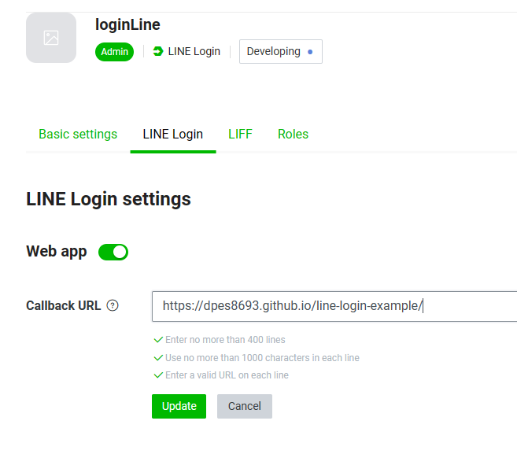

參考文章
https://ithelp.ithome.com.tw/articles/10244690
https://ithelp.ithome.com.tw/articles/10229829
https://w3c.hexschool.com/blog/d3accfa7
1. 打 line_GET_api 做跳轉 https://access.line.me/oauth2/v2.1/authorize
2. 去 line developer 設定 Callback URL

3. 登入後會跳轉回來拿到code和state 例如 http://127.0.0.1:5500/index.html?code=hVL4p85qcU0bbvNpP8Sz&state=login
4. 打 line_POST_api_urlencoded https://api.line.me/oauth2/v2.1/token 取token
5. 丟給後端
6. 後端可以用token去拿用戶資料 // GET https://api.line.me/v2/profile